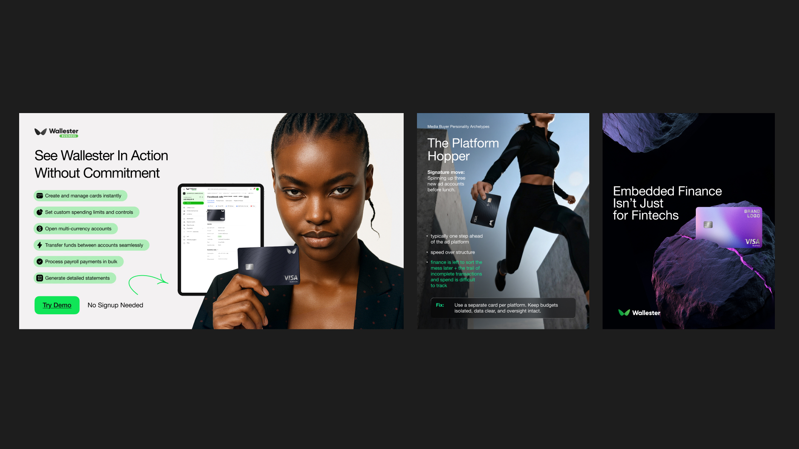
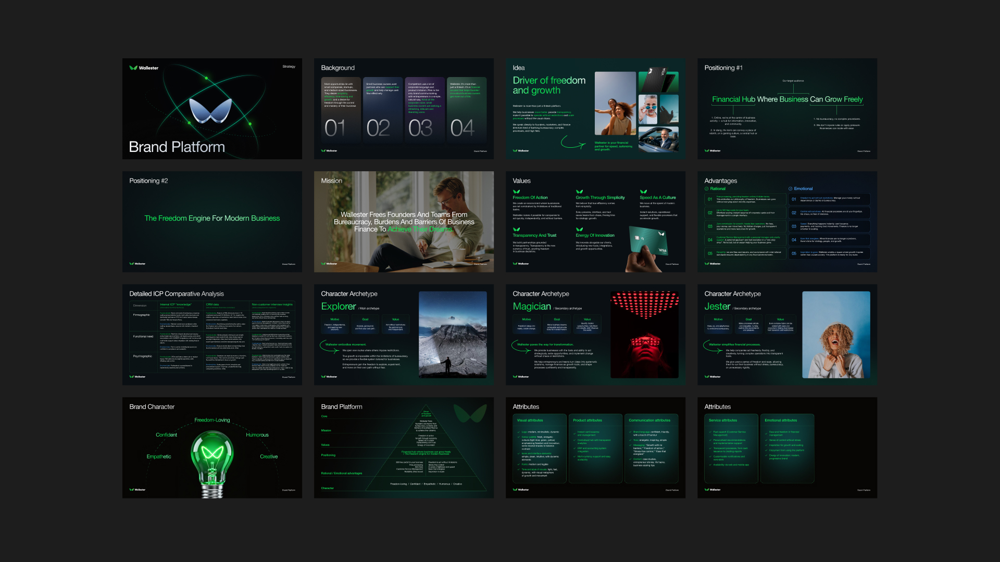
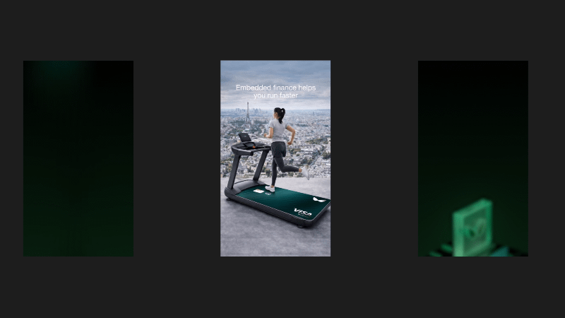

01 /Work inside an existing system
Wallester
Wallester already had a developed visual identity.
My role was to adapt the existing system across everyday communication while keeping the brand consistent.
I worked across:
Digital · SMM · Web · Presentations · Events · Motion
I created presentation materials, event graphics, storyboards and motion content based on the existing brand system.


